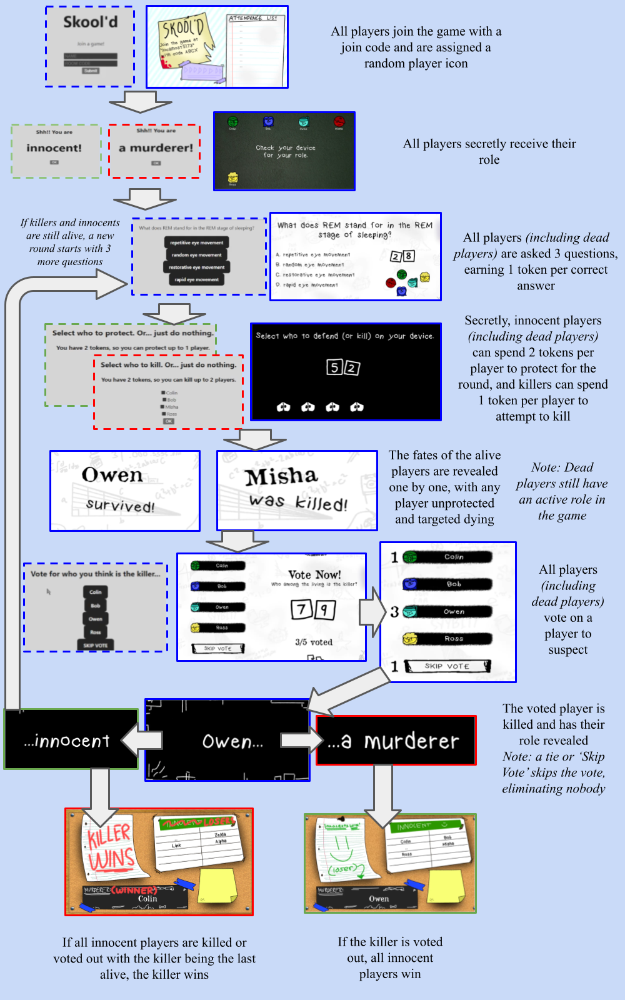
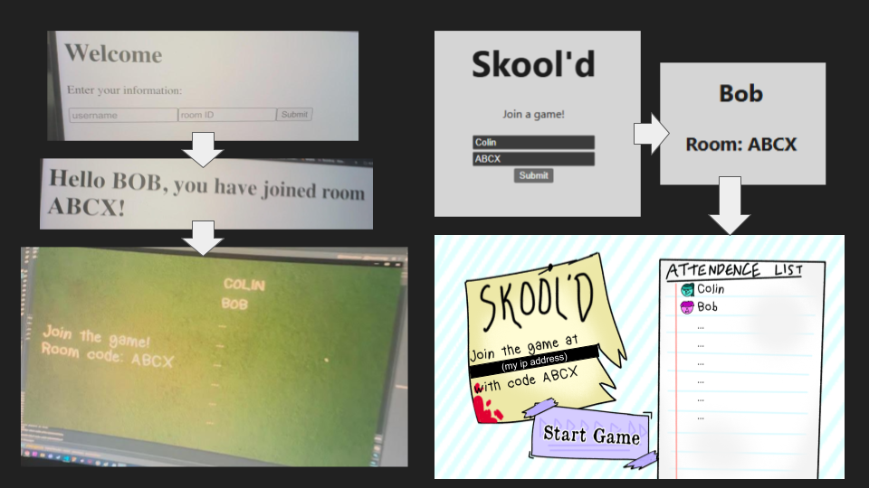
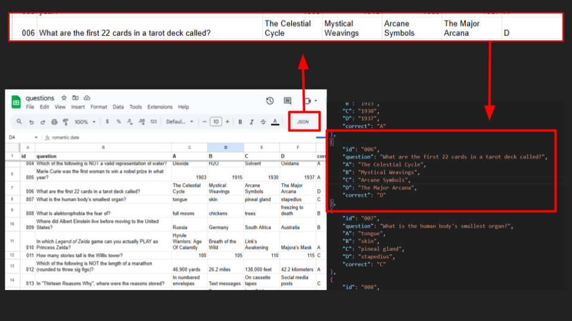
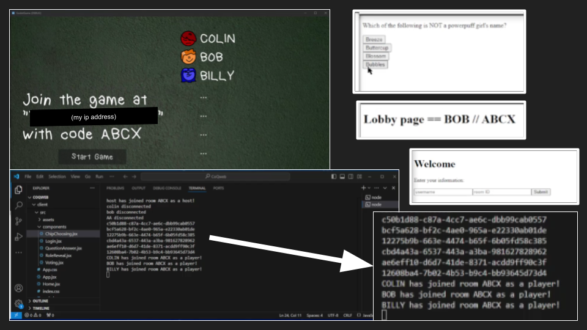
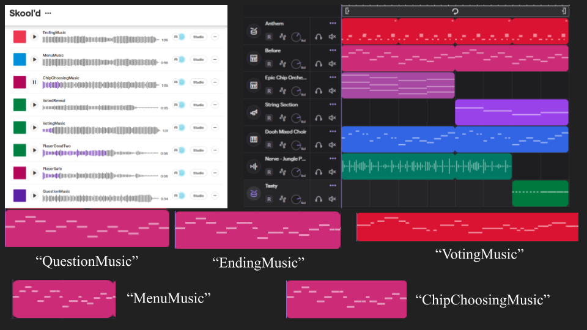
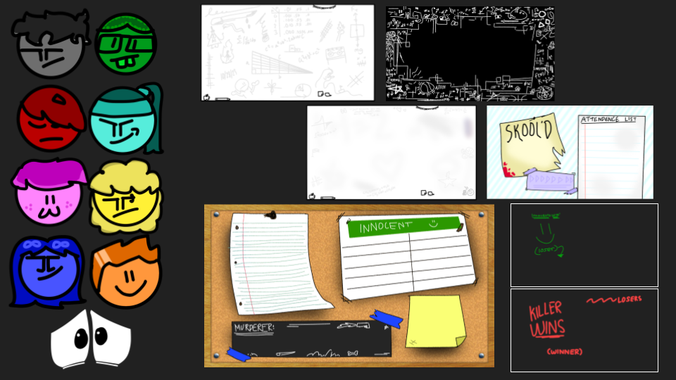

Skool'd
Oct 2024
Overview
This is a game inspired by Jackbox's style of party games. It involves players using any device that can access a website as the controllers to play a party game, mixing murder mystery, social deduction, and trivia.
Screenshots
Most of these screenshots and text have been extracted from when I submitted this as a Maker Portfolio when applying to college.

An outline of the main gameplay loop, including screenshots from the game and the website view.

Early development and late development comparison of lobby screen on game and controller, shows prioritization of features before working on aesthetics.

I used a Google Sheet to write questions and a browser extension to convert it into JSON. This setup lets me easily update questions; when I add new ones in the sheet, I just redownload the JSON file. Quick way to keep the project up-to-date.

Screenshots of testing before UI improvements, focusing on functionality first. Console shows output of the server, UUID whenever someone connects, and status updates when someone joins the game.

I do not have very much musical knowledge. I used a free website to create the music for this game, and thematically "connected" them with a similar melody, but varied the tempo and instruments to create different feelings for different stages of the game.

Art assets, including player characters and backgrounds.